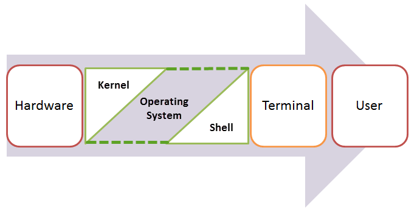
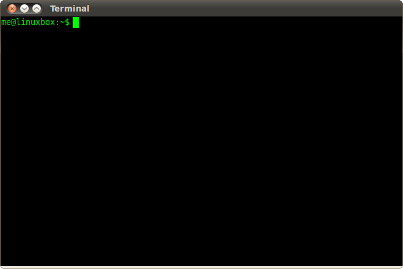
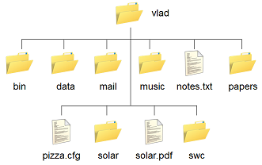
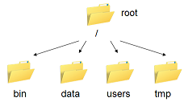

🎯 Learning Objectives
By the end of this lecture, you will be able to:
- ✅ Understand what a shell/terminal is and why it matters
- ✅ Navigate the filesystem using
cd,ls,pwd - ✅ Create, move, copy, and remove files and directories
- ✅ Use pipes and redirection to chain commands
- ✅ Search files with
grepandfind
📑 Table of Contents
- ● 🐚 Lecture 0 — The Shell
- 1. ● 🐧 What Is Linux?
- 2. ● 💻 Linux Shell or “Terminal”
- 3. ● 🚀 Let’s Get Started — Basic Commands
- 4. ● 📂 Moving Around the File System
- 5. ● 📁 Navigating and Managing Files & Directories
- 6. ● 🗂️ Examining the Contents of Other Directories
- 7. ● 🌍 Full vs. Relative Paths
- 8. ● ⚡ Saving Time with Shortcuts
- 9. ● ✨ Saving Time with Wildcards
- 10. ● 📝 Editing Files in the Terminal — nano, vi, and vim
- 11. ● ⚡ Saving Time with Tab Completion
- 12. ● ⏳ Command History
- 13. ● 📄 Examining Files
- 14. ● 📘 Viewing Large Files with less
- 15. ● 🔁 Redirection — Sending Output to Files
- 16. ● 📦 Creating, Moving, Copying, and Removing Files
- 17. ● 🔢 Counting Words, Lines, and Characters
- 18. ● 🚀 The Awesome Power of the Pipe (|)
- 19. ● 🔤 A Sorting Example — Introducing sort
- 20. ● 📊 Sorting by Columns — Using sort -k and -n
- 21. ● 🔎 Searching Files with grep
- 22. ● 🗂️ Finding Files with find and xargs
🧾 Summary
This notebook introduces students to the Unix/Linux Shell, an essential tool for every data scientist and programmer. You’ll learn fundamental concepts such as command-line navigation, file management, scripting, and automation — skills that form the foundation for efficient workflows in scientific computing and data science.
🔩 Key Concepts
- 🗺️ Navigation: Moving between directories with
cd,pwd,ls - 📁 File Operations: Creating, copying, moving, and deleting files & directories
- 🔍 File Inspection: Viewing file contents with
cat,less,head,tail - ⚡ Basic Scripting: Writing and executing simple shell scripts
- 🔄 Automation: Using loops and commands to automate repetitive tasks
- 🔧 Shell Environment: Understanding PATH, variables, and configuration
🔗 Resources
- 📘 GitHub Repository: PyPro-SCiDaS — The Shell
- 💡 Feel free to explore, fork, and practice before the session!
🐧 What Is Linux?
Fig 1 — The Linux Tux Mascot and Open Source Spirit
An Operating System (OS) is the essential software that allows users to run and manage other applications on a computing device. It serves as a bridge between the user and the computer’s hardware, enabling efficient communication between both.
An operating system consists of many parts, but its two core components are:
- Kernel 🧩 — The core of the system that directly interacts with the hardware, managing resources like memory and CPU.
- Shell 💬 — The command interface that interprets user input and communicates it to the kernel.

Fig 2 — Relationship between User, Shell, and Kernel
Linux is the kernel of a family of operating systems inspired by UNIX. Created in 1991 by Linus Torvalds, Linux is free and open source — anyone can study, modify, or redistribute it. This openness has given rise to hundreds of distributions (“distros”), each tailored for different users and purposes.
- 🐧 Ubuntu Linux
- 🎩 Red Hat Enterprise Linux
- 🍃 Linux Mint
- 📦 Debian
- 🔥 Fedora
Each distro uses the Linux kernel but adds its own package manager, desktop environment, and default applications — forming the rich ecosystem that powers servers, supercomputers, and millions of devices worldwide.
💻 Linux Shell or “Terminal”
The Shell is the beating heart of Linux 🧠 — a program that receives commands from the user, sends them to the operating system for processing, and displays the results. While most Linux distributions include a GUI (Graphical User Interface), the CLI (Command Line Interface) remains the most direct and powerful way to interact with your system.

Fig 2 — The Terminal provides access to the Linux Shell
A shell in a Linux operating system takes input in the form of commands, processes them, and returns output. It serves as the interface through which users control programs, run scripts, and automate tasks. The terminal is the window or application that gives you access to the shell — think of it as the doorway to your system’s inner workings 🧩.
🧠 Why Learn the Shell?
- The shell is common in scientific and technical computing. You’ll encounter it frequently in data science, machine learning, and software engineering workflows.
- The shell is a powerful and efficient way to interact with your computer. Graphical interfaces and command lines complement each other — mastering both dramatically expands what you can accomplish.
⚙️ Types of Shells
The shell itself is just another program — and many varieties exist. The most common (and the one we’ll use) is the Bourne-Again SHell (bash). Even if bash isn’t your system’s default shell, it’s usually installed and can be launched simply by typing:
bash
<div style="text-align: right; margin-top: 12px; font-size: 0.85em;"><a href="#table-of-contents" style="color: #667eea; text-decoration: none;">↑ Back to TOC</a></div>
🚀 Let’s Get Started — Basic Commands
Before diving into complex operations, let’s begin by opening the Terminal — our main workspace for interacting with Linux.
Ctrl + Alt + T
Once open, you’ll see the command prompt — this is where you’ll type instructions for your computer.
🧪 Example: Manipulating Experimental Data Files
We’ll learn shell basics through a hands-on activity using experimental data from a hearing test. To begin, let’s retrieve a small dataset from GitHub using the commands below. Make sure you have an Internet connection before proceeding 🌐. Clone the lesson repository by typing this in the terminal
Then you move into the new folder by doing:
These two commands will:
- ⬇️ Download all the lesson materials and data into a folder called
InPy. - 📂 Navigate inside that folder so you can start working with the files immediately.
🔤 The echo Command
One of the simplest and most frequently used commands in Linux is echo.
It simply prints text or variables to the terminal. Try this command in your terminal:
After pressing Enter, the terminal will display:
The echo command is especially handy for:
- 🖨️ Printing messages or text directly to the terminal.
- 📜 Displaying the value of variables in shell scripts.
- ⚙️ Generating known outputs to pass into other programs.
echo with variables (like $USER or $HOME) to display dynamic system information.
📂 Moving Around the File System
Let’s explore how to navigate the file system using command-line tools. While it’s easy to move around with a GUI (Graphical User Interface) — by simply clicking folders — you’ll soon see that doing it from the shell is just as simple, faster, and far more powerful 🚀.

Fig 1 — Example of a user’s home directory structure
1️⃣ The pwd Command
Before you can move around, you need to know where you currently are in the system.
The command pwd stands for print working directory — it shows your current location in the directory tree 🌲.
Output might look like:
That means you’re currently in your home directory.
2️⃣ The ls Command
The ls command lists the files and folders in your current directory.
Directories are often called “folders” in GUIs — but in the shell, they’re just special types of files.
🔹 Colors and symbols:
- Blue — Directories
- White — Regular files
- Green* — Executable files
If your terminal doesn’t show colors, you can use:
The -F option adds helpful symbols:
- / after a name — indicates a directory
- * — indicates an executable file
3️⃣ The whoami Command
Whenever you open a terminal, you start inside your home directory. Each user has a unique home directory where they can create, modify, or delete files freely.
For instance, if your username is me, typing pwd might show:
To verify your username at any time, use:
The terminal will print your current user ID — confirming who’s logged in 👤.
cd, mkdir, and rmdir! 🗺️
📁 Navigating and Managing Files & Directories
4️⃣ The cd Command
Use the cd command to change directories (i.e., move from one folder to another).
For example, if you’re in your home folder and want to go to the Downloads folder:
🔸 Note: The cd command is case-sensitive.
You must type folder names exactly as they appear.
5️⃣ The mkdir and rmdir Commands
Use mkdir (make directory) to create a new folder.
For example, to make a directory called MyFirstDirectory:
To delete an empty directory, use rmdir:
If the directory contains files, you’ll need to use:
⚠️ Be careful — rm -r permanently deletes everything inside the directory!
6️⃣ The touch and rm Commands
The touch command is used to create empty files.
For instance, type:
Then use ls to confirm the file exists:
To delete this file, use rm:
Run ls again — you’ll notice that testfile is gone.
The rm command permanently removes files.
7️⃣ The man and --help Commands
Whenever you’re unsure about how a command works, Linux provides built-in documentation.
You can access it using man (manual) or the --help option.
or
These commands display the manual pages or usage options for cd.
Press q to quit the manual viewer.
cat, head, and nano! 🧭
🗂️ Examining the Contents of Other Directories
By default, the ls command lists the contents of your current working directory —
the folder you’re currently in. You can always confirm your location with:
However, you can also use ls to explore other directories without moving into them.
This is a great way to peek into folders and check their contents remotely 📁.
🔍 Viewing Another Directory’s Contents
Let’s assume you’re in your home directory. To list the contents of the InPy directory, run:
This displays all files and subdirectories inside InPy — without you having to actually “enter” it.
You can also check the contents of a subdirectory, such as shell-lesson, by using a path:
This command lists everything in shell-lesson — even though you haven’t moved there yet.
💡 You can think of this as “looking through the window” of another folder.
🚀 Jumping Directly into a Directory
The cd command also supports paths!
If you want to jump straight into a folder without visiting its parent first, just type:
✅ This instantly moves you into the shell-lesson directory, skipping any intermediate levels.
Try running pwd afterward — you’ll see that you’re now inside InPy/shell-lesson.
🌍 Full vs. Relative Paths
The cd command takes an argument — the name or path of the directory you want to move to.
Directories in Linux are arranged in a hierarchical tree structure, where each directory can contain files and subdirectories.
You can refer to a directory in two ways:
- 📍 Absolute (Full) Path — shows the complete route from the top-level directory (
/) to your destination. - 🧭 Relative Path — shows the route from your current location to the destination.
🔹 Example: Viewing Your Full Path
Navigate to your home directory, then use pwd to check your current location:
This means:
/— the root directory (the top of the hierarchy)home— a folder inside the root directoryme— your personal home directory insidehome

Fig 1 — The Linux file system hierarchy
🧭 Navigating with Absolute vs. Relative Paths
Let’s navigate directly to a subdirectory using an absolute path (the full location from the root):
✅ This command moves you to shell-lesson from anywhere in the system,
because it specifies the complete route starting from /.
Now, go back to your home directory and try this instead:
This version uses a relative path. It assumes you are already in your home directory and navigates “relative” to that starting point.
🧩 Key Differences
| Type | Starts With | Example | Use Case |
|---|---|---|---|
| Absolute Path | / | /home/me/InPy/shell-lesson |
Can be run from anywhere |
| Relative Path | (no slash) | InPy/shell-lesson |
Shorter when working locally |
/.
Relative paths depend on where you currently are — and often save you typing! 💡
🧠 Exercise
Let’s explore one of the most important directories in Linux — the system’s command storage!
👉 Now, list the contents of the /bin directory.
This is where many essential system commands (like ls, pwd, and echo) live.
🔍 Question: Do you recognize any commands in this list? (You’ll likely see many familiar ones — they’re the very tools you’ve been using!)
⚡ Saving Time with Shortcuts
The Linux shell provides a few powerful shortcuts to help you navigate faster and save typing time. These shortcuts are especially useful when working across directories.
🏠 The Tilde ~ — Your Home Shortcut
The tilde character (~) represents your home directory.
From anywhere in the system, you can use it to quickly refer back home.
For example:
This command prints the contents of your home directory —
no need to type the full absolute path like /home/me.
⬆️ The Double Dot .. — One Level Up
The double dot (..) always refers to the parent directory (the folder one level above your current location).
Try this:
If you’re in /home/me/InPy/shell-lesson,
this will list the contents of /home/me/InPy.
You can also “chain” dots to move further up:
This prints the contents of /home/me —
two levels above your current directory.
📍 The Single Dot . — Your Current Directory
The single dot (.) refers to your current directory.
Thus, the following commands are all equivalent:
They each print the contents of your current directory.
It may not seem useful now — but as you begin working with scripts and relative paths,
you’ll use . frequently to reference the current location.
🧭 Shortcut Summary
| Shortcut | Meaning | Example | Result |
|---|---|---|---|
~ |
Home directory | ls ~ |
Lists contents of /home/me |
.. |
Parent directory | ls .. |
Lists contents one level up |
. |
Current directory | ls . |
Lists current contents |
~, ., and .. make command-line navigation faster, smarter, and cleaner —
and you’ll use them constantly as you automate your workflows! ⚙️
✨ Saving Time with Wildcards
Wildcards are special symbols that help you select multiple files or directories with a single command. They make file manipulation faster, easier, and more flexible.
🧩 The Asterisk * — Match Everything
Navigate to the shell-lesson/data/thomas directory, which contains hearing test data files for Thomas.
If you type ls, you’ll see several files — each named with four digits (e.g., 0241, 0481, etc.).
By default, ls lists everything in the current directory.
But you can use the * wildcard to match groups of filenames.
This command lists all files in the current directory — exactly like plain ls.
But now, you can start filtering specific filename patterns!
🎯 Using Patterns to Filter Files
Try listing only the files that end with the number 1:
You’ll see every file that ends with 1.
The * stands for “anything before 1”.
You can also use wildcards with full paths. For example:
This lists every file in /usr/bin that ends with .sh —
in other words, every shell script in that directory.
🧠 Combining Wildcards
You can combine wildcards to form powerful patterns. For example:
This lists every file in the current directory that contains the number 4 and ends with 1. You’ll get something like:
🔍 What’s Happening Behind the Scenes?
When the shell sees a * inside a command, it performs pattern expansion:
- It scans the current directory for all filenames that match the pattern.
- It replaces the pattern with the matching filenames, separated by spaces.
So the two commands below are actually identical:
The ls command doesn’t know whether the filenames came from you
or were auto-expanded by the shell — it simply receives the list of matching files.
🧠 Exercise — Practicing Wildcards
Use your knowledge of wildcards (*, ?, []) to complete the following tasks.
Each question should be solved using a single ls command —
and remember, do not change directories! Stay where you are 🧭.
- 📁 List all files in
/binthat contain the letter a.
- 🔤 List all files in
/binthat contain the letter a or the letter b.
- 🧩 List all files in
/binthat contain both the letters a and b.
💡 Hint: You’ll need to combine two wildcard patterns separated by a space — the shell will expand both and merge the results.
✅ Goal: Observe how pattern matching behaves when you use multiple wildcards and character sets.
Try modifying these patterns — what happens if you replace [ab] with [abc]?
📝 Editing Files in the Terminal — nano, vi, and vim
The Linux command line includes several built-in text editors that allow you to create and modify files directly from the terminal — no GUI required!
The two most common are nano and vi / vim.
🌿 nano — Friendly and Colorful
nano is a beginner-friendly terminal editor that supports syntax highlighting (coloring keywords) and recognizes most programming languages.
It displays helpful shortcuts at the bottom of the screen — perfect for quick edits or writing simple scripts.
The command above creates (or opens) a file named check.txt.
When you finish editing:
- 💾 Press
Ctrl + Xto exit - 🟢 Then press
Yto save changes (orNto cancel)
⚙️ vi / vim — Minimal and Powerful
The vi editor (and its improved version vim, “Vi IMproved”) is a lightweight but extremely powerful text editor.
It’s preferred by advanced users and system administrators because it’s available on almost every Unix/Linux system.
vi has two main modes:
- Command mode — for navigation and issuing editing commands
- Insert mode — for typing or modifying text
To start editing, type i to enter Insert Mode.
When finished, press Esc to return to Command Mode, then type:
nano if you’re new — it’s easy and forgiving.
When you feel comfortable, give vim a try for its speed and precision! ⚡
🧠 Exercise — Creating and Editing a Personal File
Now it’s your turn to practice using text editors directly in the terminal! You’ll create a simple text file and fill it with a short personal description.
📋 Instructions
- Open your terminal and use either
nanoorvi(choose whichever you prefer). - Create a new file named
username.txt(replace username with your actual username or your first name).
🧬 What to Write Inside
Inside your file, include a few lines about yourself:
- 👤 Your full name
- 🌍 Your country of origin
- 🎓 Your scientific or academic background
- 🚀 Where you see yourself in the next ten years
- 💭 (Optional) Anything else you’d like to add — goals, hobbies, or a quote you live by!
💾 When You’re Done
- In
nano: PressCtrl + X, thenYto save, andEnterto confirm. - In
vi/vim: PressEsc, then type:wqto save and quit.
⚡ Saving Time with Tab Completion
Typing long file or directory names can quickly become tedious.
Luckily, the Linux shell includes an incredibly useful feature:
tab completion.
It helps you type faster and avoid mistakes by automatically filling in names for you.
🧭 Navigating with Tab Completion
Let’s practice! Start by moving to your home directory, then type the first few letters of a directory name and hit Tab:
The shell automatically completes it as:
💡 Tip: You only need to type enough letters to make the name unique.
If there are multiple matches, pressing Tab twice will show all possible options.
🎯 Multiple Matches
If more than one directory or file starts with the same letter(s), the shell can’t decide which one you mean. For instance:
The first Tab does nothing because there are several directories starting with “3.”
When you press Tab again, the shell lists all possible matches so you can choose one.
💻 Completing Program Names
Tab completion doesn’t just work for directories — it also works for commands! Try this example:
You’ll see a list of every program that starts with the letter e.
One of them will be echo. If you type:
…it completes automatically to:
⏳ Command History
The shell remembers all the commands you’ve recently executed — this is called your command history. It’s one of the most useful features when working in the terminal because it saves you from retyping long commands.
🧭 Navigating Through History
Use your keyboard’s arrow keys to scroll through previous commands:
- ⬆️ Up Arrow — Go backwards through your command history (previous commands)
- ⬇️ Down Arrow — Move forward again through the command history
Try pressing the Up Arrow a few times — you’ll see your recent commands appear one by one. This is especially handy when re-running or slightly modifying previous commands.
💡 Canceling a Command
Sometimes you start typing a command and realize it’s wrong, or you just want to stop before pressing Enter. No problem — simply press:
Here, ^C means “Control + C”.
This **cancels the current command** and gives you a **fresh, clean prompt**.
Ctrl + C often —
they’re your best friends for fast, frustration-free command-line work! ⚡
📄 Examining Files
One of the simplest ways to view the contents of a file in the terminal is by using the cat command — short for concatenate.
It reads one or more files and prints their contents directly to the screen.
👀 Viewing a File
Let’s start by displaying the contents of a single file named appaloosa.txt:
The command above will print every line of the file right into your terminal window.
🧩 Concatenating Multiple Files
You can also display multiple files one after another — concatenating their contents. For example, this command prints the same file twice:
This demonstrates how cat can handle several inputs in sequence.
It’s the same principle used when combining text files together — a handy feature for scripting and automation.
cat for small files.
For larger files, try less or head — they make navigation easier. 📘
📘 Viewing Large Files with less
While cat is great for small files, it can quickly become overwhelming when a file has hundreds or thousands of lines.
That’s where less comes in — a powerful tool for viewing and navigating large text files interactively.
👀 Opening a File with less
Let’s open a file named dictionary.txt from our lesson folder:
When you run this command, the file opens in an interactive viewer. You can now scroll through it, search for text, and navigate freely.
🎮 Navigation Controls
The less program shares the same keyboard shortcuts as the man pages viewer.
Here are the most common ones:
| Key | Action |
|---|---|
| Space | Move forward one screen |
| b | Move backward one screen |
| g | Go to the beginning of the file |
| G | Go to the end of the file |
| q | Quit less |
🔍 Searching Inside a File
less also allows you to search for words or phrases inside the file — perfect for finding specific information quickly.
To search for a word:
For example, to search for the word cat inside dictionary.txt, type:
Press Enter and less will jump to the first match.
To repeat the search, simply press / followed by Enter again.
⚠️ Common Pitfall
less searches only forward from your current position in the file.
If you’re already near the end, it won’t find earlier matches.
👉 Simply press g to return to the top before searching again.
less as your in-terminal “text viewer.”
It doesn’t edit files — it just helps you explore them efficiently. 🧭
🔁 Redirection — Sending Output to Files
The shell allows you to redirect the output of commands into files instead of displaying them on the screen. This is called redirection and it’s one of the most powerful features of Linux for data management and automation.
🎧 Revisiting Our Experimental Data
We’ll return to the hearing test dataset located in the shell-lesson/data directory.
Each subdirectory represents a participant. Let’s navigate to the bert folder:
You’ll find several text files containing the participant’s results. We can print them all at once using a wildcard:
📤 Redirecting Output to a File
Instead of printing everything to the terminal, we can redirect the combined output into a new file:
This tells the shell:
Take the output fromcat au*and save it into a file called../all_data.
Now, verify that the file was created:
If all_data already existed, it would have been overwritten.
That’s because the redirection symbol > always replaces the file’s contents.
📥 Appending Instead of Overwriting
Sometimes you may want to add new output to the end of an existing file rather than replacing it. In that case, use a double redirection symbol:
Now, the new data is appended to the file instead of overwriting it — this is particularly useful when aggregating results from multiple experiments or scripts.
> to create or replace a file, and >> to append new data.
Redirection is key to automating workflows and combining experiment outputs efficiently. ⚙️
🧠 Exercise — Practicing Output Redirection
It’s time to put your redirection skills to the test!
You’ll now combine data from multiple experiment files into a single dataset using the append operator >>.
📋 Instructions
Using the >> operator, append the contents of all files that contain the number 4 in their filename from the directory:
to the existing file all_data that you previously created in the bert directory.
💻 Example Solution
Use a wildcard (*) to match every file that contains “4” in its name:
✅ This command appends the contents of all Gerdal files containing “4” to the existing all_data file.
After running the command, the all_data file should now contain:
- 📊 All of Bert’s experiment data
- ➕ Any Gerdal experiment file whose name includes the number 4
cat all_data | wc -l
to count the total number of lines — a quick way to confirm that your file grew after appending! 📈
📦 Creating, Moving, Copying, and Removing Files
Now that we’ve created a file called all_data using redirection, let’s learn how to manage it.
You’ll discover how to copy, move, rename, and remove files directly from the terminal — essential commands for every Linux user.
🧩 Step 1 — Copying Files with cp
We can create a backup of our critical data file using the cp (copy) command.
Navigate to the data directory and enter:
✅ A new file named all_data_backup is now an exact copy of all_data.
Use ls to verify:
🚚 Step 2 — Moving Files with mv
You can move files to another directory using the mv (move) command.
Let’s move our backup file to the temporary directory /tmp:
💡 The /tmp directory is a shared temporary storage area available to all users.
Files in /tmp are automatically deleted when the computer restarts — so it’s not a good place for permanent backups.
✏️ Step 3 — Renaming Files
The mv command can also rename files.
Let’s rename our main data file to mark it as important:
Now, if you run ls, you’ll see that the file name has changed:
🗑️ Step 4 — Removing Files with rm
When you no longer need a file, delete it using the rm (remove) command.
Let’s delete the backup we placed in /tmp:
⚠️ Be careful! Once deleted with rm, files are gone — there is no recycle bin.
mv or rm.
If you’re unsure, try running ls first to confirm the file’s location! 🧭
🧠 Exercise — Practicing File and Directory Management
Let’s practice the essential file manipulation commands you’ve just learned:
mv (rename/move), mkdir (make directory), and cp (copy).
Follow the steps below carefully — each builds on the previous one!
📋 Tasks
-
🏷️ Rename the file
all_data_IMPORTANTback toall_data.
-
📁 Create a new directory named
fooinside yourdatafolder.
-
📤 Copy the
all_datafile into the newfoodirectory.
✅ Once you’re done, use ls foo to verify that all_data was successfully copied into the new directory.
-v (verbose) option to your commands
(e.g., cp -v or mv -v) to see exactly what the shell is doing! 🧭
🔢 Counting Words, Lines, and Characters
The wc command — short for word count — lets you quickly measure the size of your text data.
It reports the number of lines, words, and characters in one or more files — a simple yet powerful way to verify data integrity or check file sizes.
📄 Step 1 — Count Words Across Multiple Files
Make sure you are inside the data directory, then run the following command:
For each file listed, wc prints three numbers:
| Column | Meaning |
|---|---|
| 1️⃣ | Number of lines |
| 2️⃣ | Number of words |
| 3️⃣ | Number of characters |
The final line of output is the total sum across all listed files. In our case, it reports 10,445 characters in total.
📊 Step 2 — Compare With the Merged File
Remember, the bert/* and gerdal/*4* files were previously merged into all_data.
Let’s verify that all_data contains the same number of characters:
If your workflow was correct, the output should show identical totals — proving that your merged dataset is complete.
💾 Step 3 — Checking File Size
Each character in a text file typically takes up one byte of disk space. We can confirm that the file size matches the character count using a detailed listing:
The fifth column of this output shows the file size in bytes. If it matches 10,445, you’ve just validated the integrity of your merged dataset!
wc with wildcards (*) to summarize multiple data files at once —
a quick way to verify experiment consistency or file completeness! ⚙️
🧠 Exercise — Exploring wc Options
The wc command has several optional flags that reveal more details about text files.
Let’s take a moment to explore one of them through a small challenge 👇
📋 Task
Figure out how to makewcprint the length of the longest line in the fileall_data.
💡 Hint
Check the manual for wc to see all available options:
Look for an option that measures the “maximum display width” or “length of the longest line.”
You’ll find that wc has a flag specifically for that! 👀
✅ Expected Command
This command prints a single number — the length of the longest line (in characters) in all_data.
It’s a quick way to inspect how wide your data lines are!
wc -L whenever you need to check for unusually long lines —
it’s especially useful when cleaning up messy text data or logs. 🧹
🚀 The Awesome Power of the Pipe (|)
The pipe (|) is one of the most powerful tools in the Unix/Linux shell.
It allows you to chain commands together — sending the output of one command directly into another without creating temporary files.
📊 The Problem
Suppose you want to see only the total number of characters, words, and lines across all files in bert/* and gerdal/*4*.
You could simply run:
…but this works only because you created all_data earlier by concatenating multiple files —
wasting disk space for a temporary file we don’t really need!
💡 Step 1 — Learning head and tail
Before solving the problem, let’s explore two useful commands for viewing file contents:
These show the first and last few lines of a file, respectively.
You can specify how many lines to show using the -n flag:
⚙️ Step 2 — Combining Commands with the Pipe
Now, instead of creating all_data, let’s directly calculate totals by combining commands:
The | tells the shell to send the output of wc directly into tail.
The result? Only the final total line from wc is displayed — no temporary files, no wasted space!
🧩 Step 3 — Understanding Standard Input and Output
When you run a command like tail without specifying a file, it waits for input — either from your keyboard or from another program via a pipe.
Try this experiment:
After pressing Ctrl+D (⏎ End-of-File), the program prints:
Here, ^D signals the end of input.
This mechanism — reading from standard input and writing to standard output —
is what makes the | (pipe) so powerful.
🔗 Step 4 — Chaining Multiple Commands
You can connect several commands in a chain. For instance:
This line:
- 🔍 Searches for lines containing
sound(grep) - 📋 Sorts them alphabetically (
sort) - 🧮 Removes duplicates and counts occurrences (
uniq -c) - 🧾 Finally counts total unique lines (
wc -l)
Each command does one small thing — but together, they form a powerful data-processing pipeline ⚙️.
|, >, and >>, and you unlock the true power of Linux. 🧠💥
🔤 A Sorting Example — Introducing sort
The sort command arranges text lines in a chosen order —
alphabetically, numerically, or even by specific fields.
Let’s see it in action by sorting a list of names!
🧾 Step 1 — Create a Text File
We’ll begin by creating a new file called to-be-sorted in the /tmp directory,
which is often used for temporary files.
Inside nano, type the following four names exactly as shown:
When finished:
- Press Ctrl + O (write out)
- Press Enter to confirm the filename
to-be-sorted - Press Ctrl + X to exit
nano
⚙️ Step 2 — Sort the File
Now that the file is saved, let’s sort its contents alphabetically:
You should see the names printed in alphabetical order:
🎉 Congratulations! You’ve just sorted your first text file using the shell.
sort is incredibly versatile — you can sort by numbers, reverse order,
or even by specific columns in tabular data (we’ll see that later).
sort with uniq, wc, and pipes (|)
to create powerful data-processing chains — a cornerstone of scientific computing in Linux. 🧮
🧠 Exercise — Appending and Sorting Names
In this activity, you’ll practice using:
echo— to print and append text>>— to append to an existing filesort— to organize data alphabetically
📋 Task
Use theechocommand and the append operator (>>) to add your name to the existing fileto-be-sorted. Then, sort all the names alphabetically and save the result into a new file calledSorted.
💡 Hint
Use the following sequence of commands 👇
Replace YourName with your actual name (e.g., echo "Yaé Gaba" >> to-be-sorted).
The first command appends your name to the end of the file,
and the second command sorts the entire list into a new file called Sorted.
🔍 Verify Your Work
You should now see an alphabetically sorted list that includes your name 🎉
diff to-be-sorted Sorted —
a great way to check what changed after sorting! 🧩
📊 Sorting by Columns — Using sort -k and -n
Let’s now combine what we’ve learned about wc (word count),
sort, and pipes (|) to analyze our dataset in a more structured way.
🧭 Step 1 — Navigate to the Data Directory
First, make sure you are back in the the-shell/data directory:
⚙️ Step 2 — Count and Sort by Column
Now, let’s count the number of lines, words, and characters in each file
within the bert directory and sort the output:
🔍 Step 3 — Understanding the Command
We’ve seen wc bert/* before — it lists, for each file:
- The number of lines
- The number of words
- The number of characters
This list is then piped (|) into sort,
which rearranges the rows according to specific criteria.
Here, we’re using two options:
-k 3→ Sort using the third column (the number of characters)-n→ Sort in numerical order (instead of alphabetic order)
💡 Example Output
As you can see, the files are now neatly sorted based on their character count — from the smallest to the largest file. This simple command is a powerful way to explore and compare data files.
-r:
wc bert/* | sort -k 3 -n -r → sorts from largest to smallest file. 📈
🧠 Exercise — Finding the Largest File
Let’s combine several shell tools you’ve learned — wc, sort, head, and tail —
to locate the largest file in a directory based on its character count.
📋 Task
Combine thewc,sort,head, andtailcommands so that only thewcinformation for the largest file is listed.
💡 Hint
To display the smallest file instead, you could use:
Now, think carefully — how would you modify this command so that it prints the **largest** file instead? 🤔 (Tip: the command that prints the **last line** instead of the first one will help.)
✅ Expected Command
This lists only the wc output for the largest file — that is, the one with the most characters. Simple, elegant, and powerful use of command chaining! ⚡
sort -k 3 -n -r | head -n 1 — it’s an alternate way to get the same result by sorting in reverse order first. 🔄
🔎 Searching Files with grep
The grep command is one of the most powerful tools in Unix/Linux
for searching and filtering text.
Its name comes from the phrase “Global Regular Expression Print”.
You’ll use it constantly when exploring data, logs, or codebases.
🧭 Step 1 — Navigate to the bert Directory
Let’s move into the directory containing Bert’s hearing test data:
🔍 Step 2 — Searching for a Keyword
Each file in this directory includes a line mentioning the word “Range”. This line records the smallest frequency range a participant could distinguish. To extract all those lines at once, use:
This command searches every file in the current directory for lines that contain the word “Range” and prints each match along with the file name. You’ll get a concise summary of all recorded ranges — a quick way to extract relevant data without opening each file individually.
💡 How It Works
grep— searches for a pattern (in this case,Range)*— applies the search to all files in the current directory- Each matching line is printed along with the file name prefix
📈 Example Output
Each line shows the test file name and its corresponding frequency range — a quick, structured way to extract specific results from a collection of text files.
grep with other commands using pipes —
for instance:
cat *.txt | grep Range
to search through multiple files’ combined content. 🚀
🗂️ Finding Files with find and xargs
The find command helps you search for files and directories based on a wide variety of conditions — such as name, type, size, or date.
It’s an indispensable tool for efficiently managing large datasets or codebases.
🧭 Step 1 — Basic Search
Navigate to the data directory and enter:
This prints the name of every file and directory under the current path (recursively).
📁 Step 2 — Filtering Only Files
To exclude directories and list only files, use:
The option -type f ensures that only regular files are displayed.
🔍 Step 3 — Search by Name Patterns
You can search for files using wildcards (*) in their names:
These commands locate files that contain the digits 1 or 2 in their names,
using logical conditions such as -or and -and.
🔬 Step 4 — Searching Within Files
find can execute another command on each file it discovers.
For example, to search for the word “Volume” inside every file:
Here:
{}represents each file returned byfind\;signals the end of the command
⚠️ This version can be slow — it runs one grep process per file.
⚡ Step 5 — Faster Search with xargs
A faster method is to combine find with xargs.
xargs collects all file names from find
and passes them as a single list of arguments to grep:
This is much faster because it typically launches only one instance of grep instead of many.
The output lists each match with the corresponding filename — perfect for quickly scanning large datasets.
find with any command, not just grep —
for example, deleting specific files, copying them, or counting them using wc -l.
Experiment carefully! 🧠
⚙️ Short Exercise — Cleaning and Organizing Data Files
Let’s apply what you’ve learned about find,
file operations, and directory management to clean up and reorganize your dataset.
📋 Task
Navigate to thedatadirectory and perform the following operations. Use one command per step (except step 2, which does not requirefind).
- Find and Delete:
Locate any file named
NOTESwithindataand delete it.
Hint:find . -name "NOTES" -exec rm {} \; - Create a Directory:
Make a new directory called
cleaneddata.
Hint:mkdir cleaneddata - Move Files:
Move all files within
datainto thecleaneddatadirectory.
Hint:find . -type f -exec mv {} cleaneddata/ \; - Rename Files:
Rename all files to ensure that their names end with
.txt. (It’s okay if some end up with.txt.txt.)
Hint: Usebashexpansion orrenameutilities, for example:find cleaneddata -type f -exec bash -c 'mv "$0" "$0.txt"' {} \;
💡 Hint for Resetting
If something goes wrong and you’d like to restore the data directory
to its original state, do the following:
After running these commands, your data directory will be fully restored. 🔁
🎯 Key Takeaways
- The shell (terminal) is a text-based interface for interacting with your operating system efficiently.
- Core navigation commands:
pwd,ls,cdlet you move through the file system. - File management commands:
mkdir,touch,cp,mv,rmlet you create, copy, move, and delete files. - Pipes (
|) and redirection (>,>>) allow you to chain commands and save output. - Shell proficiency is foundational for programming, version control, and server management.
—
—